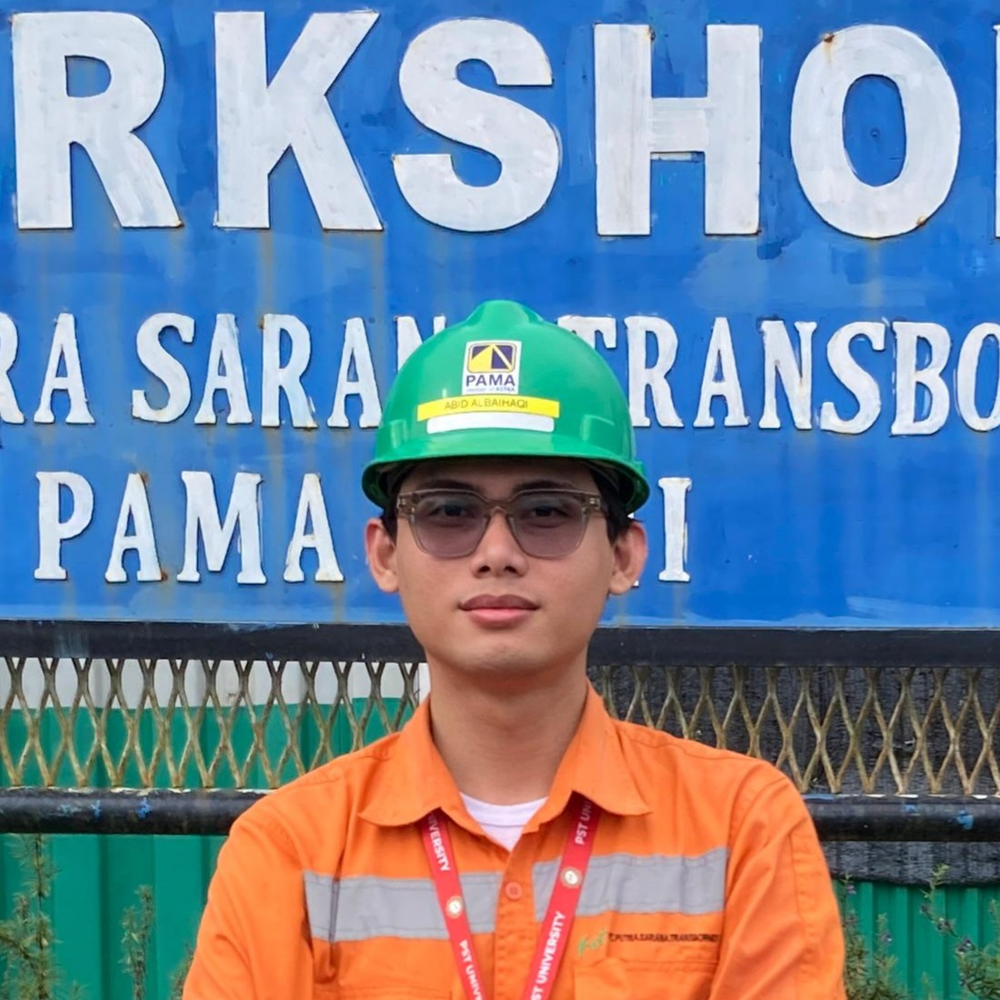

Navigasi Teknologi Baterai
Battery Technology Navigation
Our Team

Muhammad Abid Albaihaqi
251011450302

Azriel
Systems Engineer

Fikri
Interface Designer

Fahri
Director of Operations
Topics
Pengenalan Dasar, Sejarah Singkat, dan Parameter Utama Baterai
Memahami fundamental, evolusi waktu, serta metrik performa utama.
Jenis Baterai
Klasifikasi sistem penyimpanan energi primer dan sekunder.
Struktur Fisik, Variasi Teknologi, dan Mekanisme Reaksi Baterai Lithium
Arsitektur internal dan reaksi elektrokimia pada sistem lithium modern.
Metode dan Karakteristik Pengisian Daya Baterai
Protokol pengisian dan sifat perilaku saat pemulihan energi.
Variasi Katoda, Implementasi Industri, dan Parameter Kondisi Baterai
Implementasi industri dan pengaruh faktor lingkungan pada kesehatan baterai.
Pengertian Baterai
Baterai adalah perangkat elektrokimia yang mengubah energi kimia secara langsung menjadi energi listrik. Karena listrik tidak dapat disimpan secara langsung (kecuali dalam kapasitor elektrolitik atau kumparan superkonduktor, yang keduanya memiliki keterbatasan teknis dan ekonomi yang signifikan), maka diperlukan bentuk penyimpanan tidak langsung.
50% Layout Split Visual Placeholder
Kategori Baterai
Baterai Primer
Baterai primer adalah sebutan fisis untuk baterai yang hanya bisa digunakan satu kali saja dan tidak dapat diisi ulang (non-rechargeable). Ketika seluruh energi kimia di dalam baterai tersebut sudah habis diubah menjadi energi listrik, maka baterai ini akan mati dan harus dibuang.
Baterai Sekunder
Baterai sekunder adalah sebutan untuk baterai yang dapat diisi ulang (rechargeable). Mereka memiliki kemampuan untuk mengalirkan dan menerima arus listrik beberapa kali sebelum kehilangan kapasitas penyimpanan energi mereka.
Parameter Baterai
Dalam pengoperasian baterai, terdapat beberapa parameter penting yang dibutuhkan oleh pengguna untuk memahami karakteristik dan performa baterai tersebut. Beberapa parameter utama yang sering digunakan dalam konteks baterai meliputi:
| Parameter | Unit |
|---|---|
| Energi spesifik gravimetrik | Wh g-1 |
| Kapasitas volumetrik dalam satuan | Ah cm-3 |
| Kemampuan laju pelepasan/pengisian | |
| Siklus pemakaian (masa pakai) | |
| tingkat pelepasan muatan sendiri (self-discharge) |
Karakteristik Elemen Aktif
Karakteristik elemen aktif merupakan faktor fundamental yang menentukan performa keseluruhan sistem. Elektroda positif (katoda) dan negatif (anoda) secara langsung mengontrol kapasitas energi baterai.
Anoda (Elektroda Negatif)
Anoda merupakan kutub negatif tempat terjadinya reaksi oksidasi atau pelepasan elektron saat baterai digunakan. Sifat elektrokimianya wajib memiliki potensial reduksi yang sangat rendah mendekati nol agar selisih tegangannya dengan katoda menjadi maksimal. Anoda umumnya dibuat dari material berbobot ringan untuk mengejar kepadatan energi yang tinggi per satuan berat, serta sangat memengaruhi kecepatan pengisian daya baterai melalui kelancaran proses difusi ion di dalam strukturnya.
Katoda (Elektroda Positif)
Katoda merupakan kutub positif tempat terjadinya reaksi reduksi atau penyerapan elektron saat baterai digunakan. Sifat elektrokimianya wajib memiliki potensial reduksi yang tinggi karena semakin tinggi nilainya, semakin besar tegangan listrik yang dihasilkan baterai. Di sisi lain, karena material penyusunnya berupa senyawa kompleks yang relatif berat, katoda menjadi penentu utama batas atas kapasitas penyimpanan sekaligus penentu stabilitas siklus hidup baterai saat diisi ulang.
Sejarah Baterai
Sejarah baterai dimulai dari Baterai Baghdad (sekitar 250 SM–224 M), sebuah artefak kuno dari Irak yang diperkirakan digunakan untuk pelapisan listrik atau tujuan keagamaan, namun baterai modern baru lahir pada tahun 1800 ketika ilmuwan Italia Alessandro Volta menciptakan Voltaic Pile, Perangkat pertama yang menghasilkan arus listrik kontinu dari tumpukan seng, tembaga, dan kertas bergaram.
Baterai Baghdad
Wadah perunggu berisi batang besi berlapis tembaga, diisi cuka/anggur untuk menghasilkan listrik. Mungkin digunakan untuk pelapisan listrik, pengobatan, atau tujuan keagamaan.
Istilah "Baterai"
Benjamin Franklin pertama kali menggunakan istilah "baterai" untuk menggambarkan rangkaian kapasitor kaca guna eksperimen listriknya. Istilah ini kemudian digunakan untuk sel elektrokimia yang disusun bersama.
Electrophorus
Perangkat pertama yang memproduksi listrik statis, menjadi salah satu fondasi awal dalam penelitian energi listrik oleh Alessandro Volta.
Profesor di Universitas Pavia
Alessandro Volta diangkat menjadi profesor di Universitas Pavia, tempat ia melakukan riset intensif hingga akhirnya menemukan "tumpukan Volta".
Voltaic Pile (Tumpukan Volta)
Baterai modern pertama yang menghasilkan arus listrik kontinu. Terbuat dari tumpukan piringan perak dan seng yang dipisahkan oleh kain yang direndam air garam.
Sel Daniell
Menggunakan pelat tembaga dan seng dengan larutan tembaga sulfat & seng sulfat. Teknologi ini menghasilkan arus yang jauh lebih stabil dan konsisten dibandingkan Voltaic Pile.
Baterai Asam Timbal (Pb-A)
Baterai isi ulang (sekunder) pertama di dunia. Masih menjadi pilihan utama untuk aplikasi otomotif dan starter mesin kendaraan hingga hari ini.
Baterai Leclanché
Menggunakan elektrolit amonium klorida. Digunakan secara luas untuk penerangan jalan dan merupakan baterai primer paling populer pada zamannya.
Baterai Nikel-Kadmium (NiCd)
Menawarkan kepadatan energi yang lebih tinggi dan kemampuan untuk diisi ulang, menjadi standar awal untuk elektronik portabel.
Baterai Nikel-Besi (NiFe)
Dikembangkan oleh Thomas Edison sebagai baterai penyimpanan yang sangat tahan lama untuk aplikasi industri dan kendaraan listrik awal.
Dry Cell (Sel Kering)
Inovasi baterai kering dengan elektrolit berbentuk pasta, membuatnya jauh lebih praktis dan portabel dibandingkan baterai sel basah.
Baterai Silver-Zinc
Teknologi yang menawarkan rasio energi terhadap berat yang sangat tinggi, dikembangkan terutama untuk aplikasi militer dan kedirgantaraan.
Baterai Lithium (Praktis)
Baterai lithium pertama yang dapat digunakan secara praktis, memanfaatkan sifat ringan dan potensial elektrokimia tinggi dari logam lithium.
Baterai Lithium-Ion (Konsep)
Revolusi baterai portabel dengan kepadatan energi tinggi. Goodenough menemukan bahwa LiCoO2 adalah material katoda yang sangat efisien.
Baterai Lithium-Ion (Komersial)
Baterai lithium-ion pertama yang dipasarkan secara massal oleh Sony, memicu ledakan teknologi ponsel pintar dan laptop dunia.
Dry Cell Columbia
Baterai sel kering pertama yang dipasarkan secara komersial di Amerika Serikat, membawa energi portabel ke tangan konsumen luas.
Baterai Solid-State
Menggunakan elektrolit padat menggantikan cairan, menawarkan tingkat keamanan yang lebih tinggi (tidak mudah terbakar) dan efisiensi energi yang lebih besar.
Baterai Graphene
Memanfaatkan material graphene untuk mencapai pengisian daya super cepat dan meningkatkan kepadatan energi secara signifikan.
Baterai Sodium-Ion
Alternatif masa depan yang lebih murah dan ramah lingkungan dibandingkan lithium-ion karena ketersediaan bahan baku sodium yang melimpah.
Baterai ion litium (Li-ion)
Baterai ion litium (biasa disebut Baterai Li-ion atau LIB) adalah salah satu anggota keluarga baterai isi ulang. Di dalam baterai ini, ion litium bergerak dari elektrode negatif ke elektrode positif saat baterai sedang digunakan, dan kembali saat diisi ulang. Baterai Li-ion memakai senyawa litium interkalasi sebagai bahan elektrodenya.
Keunggulan
Densitas Energi Tinggi
Densitas energi mencapai 160–270 Wh/kg, Sehingga sangat cocok untuk perangkat yang memerlukan daya besar dalam ruang kecil.
Efisiensi Produksi
Biaya produksi lebih rendah karena proses manufaktur yang sudah mapan dan material luas.
Teknologi Teruji
Dikomersialkan sejak 1992 dan menjadi standar utama industri elektronik selama puluhan tahun.
Kelemahan
Self-Discharge
Cenderung kehilangan muatan seiring penuaan meski tidak sedang digunakan.
Bentuk Fisik Kaku
Desain terbatas pada bentuk silindris/kotak, sulit untuk perangkat ultra-tipis.
Risiko Kebocoran
Menggunakan elektrolit cair yang berpotensi bocor jika casing pelindung rusak.
Baterai polimer litium (LiPo)
Baterai polimer litium adalah baterai yang dapat diisi ulang dari teknologi lithium-ion menggunakan elektrolit polimer sebagai pengganti elektrolit cair. Polimer semipadat (gel) konduktivitas tinggi membentuk elektrolit ini. Baterai ini memberikan energi spesifik yang lebih tinggi daripada jenis baterai litium lainnya dan digunakan dalam aplikasi yang mengutamakan bobot, seperti peranti bergerak, pesawat yang dikendalikan radio, dan beberapa kendaraan listrik. Sel LiPo mengikuti sejarah sel lithium-ion dan lithium-metal yang menjalani penelitian ekstensif selama 1980-an, mencapai tonggak penting dengan sel Li-ion silinder komersial pertama Sony pada tahun 1991. Setelah itu, bentuk kemasan lain berevolusi, termasuk kantong datar format.
Keunggulan
Ultra-Thin Design
Dapat dibentuk sangat tipis untuk smartphone modern dan wearables.
Safety First
Risiko kebocoran lebih rendah karena elektrolit gel tidak bersifat mengalir.
High Charge Rate
Mendukung pengisian cepat hingga 2C.
Kelemahan
Biaya Produksi Tinggi
Harga produksi sekitar 30% lebih mahal dibandingkan dengan teknologi Li-ion.
Densitas Energi Rendah
Kapasitas penyimpanan daya per bobot (130–200 Wh/kg) di bawah Li-ion.
Sensitivitas Fisik
Sangat rentan terhadap kerusakan akibat benturan, tekukan, atau tusukan tajam.
Li-ion vs LiPo: Perbandingan Head-to-Head
| Parameter | Li-ion | LiPo |
|---|---|---|
| Elektrolit | Cair | Gel / Padat |
| Densitas Energi | 160–270 Wh/kg | 130–200 Wh/kg |
| Fleksibilitas | Terbatas (Kaku) | Sangat Fleksibel |
| Laju Pengisian | 0,5 – 1C | Hingga 2C |
| Biaya Produksi | Lebih Rendah | ~30% Lebih Mahal |
KESIMPULAN: Li-ion menang pada efisiensi biaya dan kapasitas, sedangkan LiPo mendominasi desain tipis dan keamanan tinggi.
NMC (Nickel Manganese Cobalt)
Definisi
Contoh: Nissan Leaf, Hyundai Ioniq, Porsche Taycan.
Kelebihan
- Jarak tempuh sangat jauh.
- Performa cuaca dingin sangat baik.
- Mendukung Fast Charging DC.
Kekurangan
- Biaya tinggi (Kandungan Kobalt).
- Saran pengisian harian 80%.
Komponen Penyusun Baterai Li-ion
01. Kolektor Arus
Tembaga (Anoda) & Aluminium (Katoda). Berfungsi mengalirkan elektron ke sirkuit eksternal.
02. Elektroda Negatif
Anoda: Umumnya karbon grafit. Tempat ion Li⁺ disimpan saat pengisian.
03. Elektroda Positif
Katoda: Oksida logam (LiCoO₂). Sumber ion Li⁺ saat pengisian.
04. Separator Berpori
Lapisan tipis pencegah korsleting yang tetap membolehkan ion Li⁺ melewatinya.
05. Elektrolit
"Jalan tol" cair bagi ion Li⁺ untuk berpindah antar elektroda.
Prinsip Dasar
Elektron lewat kabel (listrik), Ion Li⁺ lewat elektrolit (dalam sel).
Kondisi Awal Sel Baru
Katoda (+)
Penuh dengan ion Li⁺ dalam bentuk senyawa Li₁CoO₂.
Anoda (-)
Kosong, hanya berupa Karbon (C) tanpa ion Li⁺.
Analogi Air
Katoda adalah wadah penuh air, Anoda adalah gelas kosong. Pengisian daya adalah proses memindahkan air tersebut.
Proses Pengisian (Charging)
- Ion Li⁺ lepas dari katoda, melewati elektrolit menuju anoda.
- Elektron mengalir dari katoda melalui kabel menuju anoda.
Bahasa Awam: Ion lithium "pindah rumah" ke anoda sambil mendorong elektron melewati kabel.
Reaksi Kimia
Li₁CoO₂ → Li₁₋ₓCoO₂ + xLi⁺ + xe⁻
C + xLi⁺ + xe⁻ → LiₓC₆
Proses Pelepasan (Discharging)
- Ion Li⁺ bergerak balik dari anoda menuju katoda.
- Elektron mengalir melalui sirkuit luar—inilah arus listrik yang kita gunakan.
Bahasa Awam: Ion lithium "pulang ke rumah" semula, perjalanannya menggerakkan perangkat kita.
Mekanisme Kerja
Reaksi Elektrokimia Sel
Reaksi Anoda (-)
xLi⁺ + xe⁻ + 6C ⇆ LiₓC₆
Reaksi Katoda (+)
LiCoO₂ ⇆ Li₁₋ₓCoO₂ + xLi⁺ + xe⁻
Reaksi Keseluruhan
LiCoO₂ + 6C ⇆ Li₁₋ₓCoO₂ + LiₓC₆
Tanda panah ⇆ menunjukkan reaksi dapat berbalik arah (rechargeable).
Constant Current (CC)
Karakteristik Grafik
- Arus (I): Garis lurus horizontal (Konstan).
- Tegangan (V): Naik bertahap seiring pengisian.
Kelebihan
Sederhana, biaya rendah, andal, dan hasil pengisian dapat diprediksi.
Risiko
Berpotensi overcharge berbahaya jika arus tetap tinggi saat baterai penuh.
Bahasa Awam: Seperti mengisi ember dengan aliran selang yang tidak bisa diatur. Cepat di awal, tapi bisa meluap jika tidak diawasi saat hampir penuh.
Constant Voltage (CV)
Karakteristik Grafik
- Tegangan (V): Garis lurus horizontal (Konstan).
- Arus (I): Tinggi di awal, turun secara eksponensial.
Kelemahan & Tantangan
• Arus awal ekstrem dapat merusak sel jika baterai sangat kosong.
• Waktu pengisian total lama karena arus melambat di akhir.
Bahasa Awam: Seperti meniup balon dengan tekanan tetap. Udara masuk cepat saat kempes, tapi makin lama makin sulit dan melambat saat hampir penuh.
Tapper-Current
Sifat Khas: "Irregular"
Penurunan arus tidak mengikuti pola matematis pasti (seperti eksponensial), melainkan bergantung pada dinamika sel dan alat pengisi.
Kelemahan Kontrol
Sulit diprediksi dan memerlukan kalibrasi tegangan batas yang sangat akurat agar tidak overcharge.
Bahasa Awam: Seperti mengisi kolam dengan pompa besar di awal, lalu dikecilkan manual. Berhenti saat ketinggian air (tegangan) menyentuh sensor batas.
CC – CV (Standard Method)
Fase 1: Constant Current (CC)
- Arus dijaga konstan.
- Tegangan naik secara linier.
- Berhenti saat menyentuh batas tegangan atas.
Fase 2: Constant Voltage (CV)
- Tegangan dijaga konstan.
- Arus turun secara eksponensial.
- Selesai saat arus mencapai nilai minimum (5-10%).
Kenapa Paling Direkomendasikan?
Menggabungkan kecepatan fase CC dan keamanan fase CV. Risiko panas berlebih dan overcharge sangat minim.
Bahasa Awam: Seperti mengisi bensin: pompa kencang sampai tangki hampir penuh, lalu pompa pelan-pelan sampai benar-benar penuh tanpa tumpah.
Spesifikasi Variasi Katoda Li-ion
| Singkatan | Material Katoda | Tegangan (V) | Densitas (Wh/kg) |
|---|---|---|---|
| LFP | LiFePO₄ | 3,2 | 100 |
| NCA | LiNi₀.₈Co₀.₁₅Al₀.₀₅O₂ | 3,65 | 140 |
| NMC | LiNiₓMnyCo₁₋ₓ₋yO₂ | 3,8 – 4,0 | 170 |
| LCO | LiCoO₂ | 3,7 – 3,9 | 140 |
| LNO | LiNiO₂ | 3,6 | 150 |
| LMO | LiMn₂O₄ | 4,0 | 120 |
| LNM | LiNi₁/₂Mn₃/₂O₄ | 4,8 | 140 |
Karakteristik Hambatan Dalam
Hambatan Dinamis (ΔV / ΔI)
Bukan nilai tetap, melainkan berubah tergantung kondisi operasi:
Bahasa Awam: Seperti "gesekan jalan". Berubah tergantung suhu, sisa daya, dan usia baterai. Makin besar gesekan, makin banyak energi terbuang jadi panas.
Model Pemodelan (RC)
- Komponen RC Cepat: Mewakili respons instan/penurunan tegangan seketika saat arus mengalir.
- Komponen RC Lambat: Mewakili respons lambat akibat difusi ion yang berkembang seiring waktu.
KESIMPULAN
Prinsip Kerja & Mekanisme
Baterai Li-ion adalah perangkat elektrokimia yang bekerja melalui perpindahan ion Li⁺ bolak-balik antara katoda dan anoda — mekanisme sederhana yang memungkinkan energi kimia diubah menjadi listrik secara berulang.
Keunggulan & Variasi Material
Keunggulannya terletak pada densitas energi tinggi, tegangan besar, dan self-discharge rendah. Pilihan material katoda menentukan karakteristik akhir (energi vs keamanan vs umur pakai), yang tercermin nyata pada perbedaan performa antar model kendaraan listrik di pasaran.
Monitoring & Manajemen
Performa dipantau melalui parameter SOC, DOD, SOH, dan hambatan dalam. Metode pengisian tepat (terutama CCCV) serta Sistem Manajemen Baterai (BMS) menjadi kunci untuk menjaga baterai beroperasi secara aman, efisien, dan tahan lama.